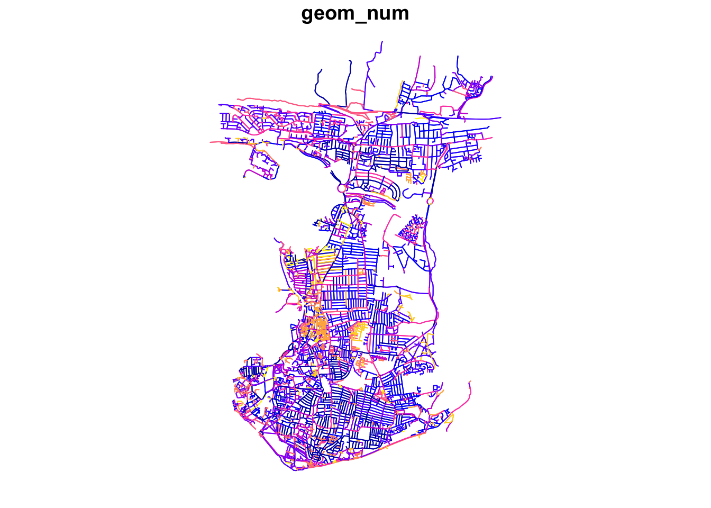

2 Transport Network Analysis
This week we will cover a different type of data: network data. We will take a look at how we can use network data to measure accessibility using the dodgr R library. We will calculate the network distances between combinations of locations (i.e. a set of origins and a set of destinations). These distances can then, for instance, be used to calculate the number of a resource (e.g. fast-food outlets) within a certain distance of a Point of Interest (e.g. a school or population-weighted centroid).
2.1 Lecture slides
You can download the slides of this week’s lecture here: [Link].
2.2 Reading list
Essential readings
- Geurs, K., Van Wee, B. 2004. Accessibility evaluation of land-use and transport strategies: review and research directions. Journal of Transport Geography 12(2): 127-140. [Link]
- Higgins, C., Palm, M. DeJohn, A. et al. 2022. Calculating place-based transit accessibility: Methods, tools and algorithmic dependence. Journal of Transport and Land Use 15(1): 95-116. [Link]
- Neutens, T. Schwanen, T. and Witlox, F. 2011. The prism of everyday life: Towards a new research agenda for time geography. Transport Reviews 31(1): 25-47. [Link]
Suggested readings
- Schwanen, T. and De Jong, T. 2008. Exploring the juggling of responsibilities with space-time accessibility analysis. Urban Geography 29(6): 556-580. [Link]
- Van Dijk, J., Krygsman, S. and De Jong, T. 2015. Toward spatial justice: The spatial equity effects of a toll road in Cape Town, South Africa. Journal of Transport and Land Use 8(3): 95-114. [Link]
- Van Dijk, J. and De Jong, T. 2017. Post-processing GPS-tracks in reconstructing travelled routes in a GIS-environment: network subset selection and attribute adjustment. Annals of GIS 23(3): 203-217. [Link]
2.3 Transport Network Analysis
The term network analysis covers a wide range of analysis techniques ranging from complex network analysis to social network analysis, and from link analysis to transport network analysis. What the techniques have in common is that they are based on the concept of a network. A network or network graph is constituted by a collection of vertices that are connected to one another by edges. Note, vertices may also be called nodes or points, whilst edges may be called links or lines. Within social network analysis, you may find the terms actors (the vertices) and ties or relations (the edges) also used.
2.3.1 Accessibility in Portsmouth
For this week’s practical, we will be using Portsmouth in the UK as our area of interest for our analysis. One prominent topic within the city is the issue of public health and childhood obesity. According to figures released in March 2020 by Public Health England, more than one in three school pupils are overweight or obese by the time they finish primary school within the city; this is much higher than the national average of one in four. One potential contributor to the health crisis is the ease and availability of fast-food outlets in the city. In the following, we will measure the accessibility of fast-food outlets within specific walking distances of all school in Portsmouth starting at 400m, then 800m and finally a 1km walking distance. We will then aggregate these results to Lower Super Output Areas (LSOA) and overlay these results with some socio-economic variables.
To execute this analysis, we will need to first calculate the distances between our schools and fast-food outlets. This involves calculating the shortest distance a child would walk between a school and a fast-food outlet, using roads or streets. We will use the dodgr R package to conduct this transport network analysis.
Note
All calculations within the dodgr library currently need to be run in WGS84/4236. This is why we will not transform the CRS of our data in this practical.
2.3.2 Acquiring network data
The first dataset we need to download will help with the visualisation of our results: boundary data that contains an outline of Portsmouth.
| File | File Type | Link |
|---|---|---|
| Major towns and cities boundaries 2015 | shp |
Download |
We can now load the required libraries as well as the major towns and cities boundaries shapefile.
R code
# libraries
library(tidyverse)
library(sf)
library(tmap)
library(osmdata)
library(dodgr)
# load major towns and cities, filter Portsmouth
portsmouth_city <- st_read("data/outline/Major_Towns_and_Cities__December_2015__Boundaries.shp",
stringsAsFactors = FALSE) %>%
filter(tcity15nm == "Portsmouth")Reading layer `Major_Towns_and_Cities__December_2015__Boundaries' from data source `/Users/justinvandijk/Library/CloudStorage/Dropbox/UCL/Web/jtvandijk.github.io/GEOG0114Q/data/outline/Major_Towns_and_Cities__December_2015__Boundaries.shp'
using driver `ESRI Shapefile'
Simple feature collection with 112 features and 5 fields
Geometry type: MULTIPOLYGON
Dimension: XY
Bounding box: xmin: -4.204842 ymin: 50.34101 xmax: 1.378014 ymax: 55.03117
Geodetic CRS: WGS 84To create our network and Origin-Destination dataset, we will need data on schools, fast-food outlets, and a streetnetwork. Today we will be using OpenStreetMap for this. If you have never come across OpenStreetMap (OSM) before, it is a free editable map of the world.
Note
Note OpenStreetMap’s spatial coverage is still unequal across the world - plus, as you will find if you use the data, the accuracy and quality of the data can often be quite questionable or simply missing attribute details that we would like to have, e.g. types of roads and their speed limits, to complete specific types of spatial analysis.
Whilst there are various approaches to downloading data from OpenStreetMap, we will use the osmdata library to directly extract our required OpenStreetMap (OSM) data into a variable. The osmdata library grants access within R to the Overpass API that allows us to run queries on OSM data and then import the data as spatial objects. These queries are at the heart of these data downloads.
We will go ahead and start with downloading and extracting our road network data. To OSM data using the osmdata library, we can use the add_osm_feature() function. To use the function, we need to provided it with either a bounding box of our area of interest (AOI) or a set of points, from which the function will create its own bounding box. You can find out more about this and details on how to construct your own queries in the data vignette.
To use the library (and API), we need to know how to write and run a query, which requires identifying the key and value that we need within our query to select the correct data. Essentially every map element (whether a point, line or polygon) in OSM is tagged with different attribute data. These keys and values are used in our queries to extract only map elements of that feature type - to find out how a feature is tagged in OSM is simply a case of reading through the OSM documentation and becoming familiar with their keys and values.
To download our road network dataset, we first define a variable to store our bounding box coordinates, p_bbox(). We then use this within our OSM query to extract specific types of road segments within that bounding box - the results of our query are then stored in an osmdata object. We will select all OSM features with the highway tag that are likely to be used by pedestrians (e.g. not motorways).
R code
# define our bbox coordinates for Portsmouth
p_bbox <- c(-1.113197, 50.775781, -1.026508, 50.859941)
# pass bounding box coordinates into the OverPassQuery (opq) function only
# download features that are not classified as motorway
osmdata <- opq(bbox = p_bbox) %>%
add_osm_feature(key = "highway", value = c("primary", "secondary", "tertiary",
"residential", "path", "footway", "unclassified", "living_street", "pedestrian")) %>%
osmdata_sf()Note
In some instances the OSM query will return an error, especially when several people from the same location are executing the exact same query. If this happens, you can just read through the instructions and download a prepared copy of the data that contains all required OSM Portsmouth data instead: [Link].
You can load these downloaded data as follows into R:
R code
load("../path/to/file/ports_ff.RData")
load("../path/to/file/ports_roads_edges.RData")
load("../path/to/file/ports_schools.RData")After loading your data, you can continue with the analysis in the Measuring Accessiblity section below, starting with the creation of a network graph with the ‘foot weighting’ profile.
The osmdata object contains the bounding box of your query, a time-stamp of the query, and then the spatial data as osm_points, osm_lines, osm_multilines and osm_polgyons (which are listed with their respective fields also detailed). Some of the spatial features maybe empty, depending on what you asked your query to return. Our next step therefore is to extract our spatial data from our osmdata object to create our road network data set. This is in fact incredibly easy, using the traditional $ R approach to access these spatial features from our object.
Deciding what to extract is probably the more complicated aspect of this - mainly as you need to understand how to represent your road network, and this will usually be determined by the library/functions you will be using it within. Today, we want to extract the edges of the network, i.e. the lines that represent the roads, as well as the nodes of the network, i.e. the points that represent the locations at which the roads start, end, or intersect. For our points, we will only keep the osm_id data field, just in case we need to refer to this later. For our lines, we will keep a little more information that we might want to use within our transport network analysis, including the type of road, the maximum speed, and whether the road is one-way or not.
R code
# extract the points, with their osm_id.
ports_roads_nodes <- osmdata$osm_points[, "osm_id"]
# extract the lines, with their osm_id, name, type of highway, max speed and
# oneway attributes
ports_roads_edges <- osmdata$osm_lines[, c("osm_id", "name", "highway", "maxspeed",
"oneway")]To check our data set, we can quickly plot the edges of our road network using the plot() function:
R code
plot(ports_roads_edges, max.plot = 1)Because we are focusing on walking, we will overwrite the oneway variable by suggesting that none of the road segments are restricted to one-way traffic which may affect our analysis as well as the general connectivity of the network.
R code
# overwrite one-way default
ports_roads_edges$oneway <- "no"Now we have the network edges, we can turn this into a graph-representation that allows for the calculation of network-based accessibility statistics.
2.3.3 Measuring accessibility
Before we can construct our full network graph for the purpose of accessibility analysis, we need to also provide our Origin and Destination points, i.e. the data points we wish to calculate the distances between. According to the dodgr documentation, these points need to be in either a vector or matrix format, containing the two coordinates for each point for the origins and for the destinations.
As for our Portsmouth scenario we are interested in calculating the shortest distances between schools and fast-food outlets, we need to try and download these datasets - again we will turn to OpenStreetMap. Following a similar structure to our query above, we will use our knowledge of OpenStreetMap keys and values to extract the points of Origins (schools) and Destinations (fast-food outlets) we are interested in:
R code
# download schools from OSM
schools <- opq(bbox = p_bbox) %>%
add_osm_feature(key = "amenity", value = "school") %>%
osmdata_sf()
# download fast-food outlets
ff_outlets <- opq(bbox = p_bbox) %>%
add_osm_feature(key = "amenity", value = "fast_food") %>%
osmdata_sf()We also need to then extract the relevant data from the osmdata object:
R code
# extract school points
ports_schools <- schools$osm_points[, c("osm_id", "name")]
# extract fast-food outlet points
ports_ff <- ff_outlets$osm_points[, c("osm_id", "name")]We now have our road network data and our Origin-Destination (OD) points in place and we can now move to construct our network graph and run our transport network analysis.
Note
In this analysis, we are highly reliant on the use of OpenStreetMap to provide data for both our Origins and Destinations. Whilst in the UK OSM provides substantial coverage, its quality is not always guaranteed. As a result, to improve on our current methodology in future analysis, we should investigate into a more official school data set or at least validate the number of schools against City Council records. The same applies to our fast-food outlets.
With any network analysis, the main data structure is a graph, constructed by our nodes and edges. To create a graph for use within dodgr, we pass our ports_roads_edges() into the weight_streetnet() function. The dodgr library also contains weighting profiles, that you can customise, for use within your network analysis. These weighting profiles contain weights based on the type of road, determined by the type of transportation the profile aims to model. Here we will use the weighting profile foot, as we are looking to model walking accessibility.
R code
# create network graph with the foot weighting profile
graph <- weight_streetnet(ports_roads_edges, wt_profile = "foot")Once we have our graph, we can then use this to calculate our network distances between our OD points. One thing to keep in mind is that potentially not all individual components in the network that we extracted are connected, for instance, because the bounding box cut off the access road of a cul-de-sac. To make sure that our entire extracted network is connected, we now extract the largest connected component of the graph. You can use table(graph$component) to examine the sizes of all individual subgraphs. You will notice that most subgraphs consist of a very small number of edges.
Note
The dodgr package documentation explains that components are numbered in order of decreasing size, with $component = 1 always denoting the largest component. Always inspect the resulting subgraph to make sure that its coverage is adequate for analysis.
R code
# extract the largest connected graph component
graph_connected <- graph[graph$component == 1, ]
# inspect number of remaining road segments
nrow(graph_connected)[1] 56364# inspect on a plot
plot(dodgr_to_sf(graph_connected), max.plot = 1)
Note
OpenStreetMap is a living dataset, meaning that changes are made on a continuous basis; as such it may very well possible that the number of remaining road segments as shown above may be slighlty different when you run this analysis.
Now we have our connected subgraph, will can use the dodgr_distances() function to calculate the network distances between every possible Origin and Destination. In the dodgr_distances() function, we first pass our graph, then our Origin points (schools), in the from argument, and then our Destination points (fast-food outlets), in the to argument. One thing to note is our addition of the st_coordinates() function as we pass our two point data sets within the from and to functions as we need to supplement our Origins and Destinations in a matrix format. For all Origins and Destinations, dodgr_distances() will map the points to the closest network points, and return corresponding shortest-path distances.
R code
# create a distance matrix between schools and fast-food stores
sch_to_ff_calc <- dodgr_distances(graph_connected, from = st_coordinates(ports_schools),
to = st_coordinates(ports_ff), shortest = TRUE, pairwise = FALSE, quiet = FALSE)The result of this computation is a distance-matrix that contains the network distances between all Origins (i.e. schools) and all Destinations (i.e. fast-food outlets). Let’s inspect the first row of our output. Do you understand what the values mean?
R code
# inspect
head(sch_to_ff_calc, n = 1) 1 2 3 4 5 6 7 8
1 4000.016 2090.485 6549.779 9356.08 10903.62 2231.919 11845.44 2292.263
9 10 11 12 13 14 15 16
1 1676.805 1680.043 1697.416 1676.805 2090.485 2090.485 2060.898 4000.016
17 18 19 20 21 22 23 24
1 2324.454 4000.016 4000.016 3338.83 1700.179 581.0582 7277.651 3610.322
25 26 27 28 29 30 31 32
1 1359.146 3321.374 340.8823 1102.226 10796.81 2963.157 2720.491 3508.267
33 34 35 36 37 38 39 40
1 2330.386 2818.121 2920.565 2920.565 736.0556 3399.756 844.6083 6231.901
41 42 43 44 45 46 47 48
1 3394.397 9171.192 9372.628 9238.263 9481.949 1629.029 3525.506 2400.918
49 50 51 52 53 54 55 56
1 7173.413 8978.739 9403.034 9329.926 6483.465 6483.465 6470.802 6470.802
57 58 59 60 61 62 63 64
1 804.5849 763.0434 2526.807 1067.907 1010.408 1010.408 1967.697 1418.767
65 66 67 68 69 70 71 72
1 2818.121 1245.823 2157.02 688.8672 2162.922 2205.285 2119.323 11755.26
73 74 75 76 77 78 79 80
1 4829.051 2738.124 844.6083 615.1102 788.7212 2586.476 2667.125 728.4882
81 82 83 84 85 86 87 88
1 11845.44 11845.44 11845.44 11934.59 11934.59 11934.59 11845.44 11845.44
89 90 91 92 93 94 95 96
1 11845.44 11845.44 11845.44 11845.44 11845.44 11339.91 6545.668 6589.917
97 98 99 100 101 102 103 104
1 6589.917 6442.566 4000.016 4000.016 4234.432 5929.469 3841.384 581.0582
105 106 107 108 109 110 111 112
1 597.3575 2654.314 5119.621 5317.048 5058.497 375.2084 926.0127 5058.497
113 114 115 116 117 118 119 120 121
1 4045.705 753.752 556.5173 713.536 622.6949 597.3575 1225.66 3339.134 3295.758
122 123 124 125 126 127 128 129
1 5469.038 6670.481 6634.905 6634.905 6626.71 6634.905 6634.905 6626.71
130 131 132 133 134 135 136 137
1 6670.481 6670.481 6626.71 6670.481 6670.481 6670.481 6670.481 6670.481
138 139 140 141 142 143 144 145
1 12348.71 9528.601 9528.601 5522.227 9339.459 9339.459 9291.034 8563.944
146 147 148 149 150 151 152 153
1 9291.034 9339.459 12026.51 12026.51 12033.8 12026.11 9548.47 3586.662
154 155 156 157 158 159 160 161
1 2300.121 815.5434 3467.049 5708.154 905.8238 905.8238 905.8238 4950.036
162 163 164 165 166 167 168 169
1 4968.988 858.9023 3216.085 3397.074 11419.74 4879.532 1813.109 9160.3
170 171 172 173 174 175 176 177
1 1666.407 9599.24 9659.195 4687.627 3177.171 3467.049 3118.594 5973.195
178 179 180 181 182 183 184 185
1 9633.051 9659.195 5299.098 3966.434 9219.851 6041.409 5972.696 8905.439
186 187 188 189 190 191 192 193
1 6656.006 5895.308 10772.24 1505.914 4995.748 11489.11 1574.826 5478.182
194 195 196 197 198 199 200 201
1 1804.091 3107.774 9102.648 4738.493 4968.988 4041.569 13159.31 5478.182
202 203 204 205 206 207 208 209
1 3295.758 3295.758 556.5173 788.7212 10113.11 5101.577 9633.051 9633.051
210 211 212 213 214 215 216 217
1 9633.051 9520.773 9520.773 9520.773 9520.773 9633.051 9633.051 6001.071
218 219 220 221 222 223 224 225
1 5606.02 4718.064 4041.569 4887.462 4885.475 1543.604 1510.665 1559.537
226 227 228 229 230 231 232 233
1 5317.388 11646.67 4944.579 4949.291 4188.983 3525.506 6046.467 5452.211
234 235 236 237 238 239 240 241
1 5317.048 5317.048 5317.048 5317.048 5317.048 5317.048 5317.048 4963.868
242 243 244 245 246 247 248 249
1 6272.114 5376.342 4738.493 5818.335 6634.905 4925.352 11559.4 11584.02
250 251 252 253 254 255 256 257
1 5058.497 5058.497 5058.497 5058.497 5101.577 5131.313 5101.577 5131.313
258 259 260 261 262 263 264 265
1 5131.313 5125.567 11845.44 6549.779 6549.779 6529.533 6549.779 6549.779
266 267 268 269 270 271 272 273
1 6529.533 4808.089 4968.988 11845.44 4774.109 4361.855 1129.672 1302.289
274 275 276 277 278 279 280 281
1 1302.289 1320.727 3344.664 4341.78 1332.226 1122.057 5297.203 11934.59
282 283 284 285 286 287 288 289
1 12026.51 3002.79 6483.465 5784.828 3383.088 3166.965 11584.02 2920.565
290 291 292 293 294 295 296 297
1 1677.06 2312.611 5837.072 5735.345 5737.21 5837.072 5837.072 4958.337
298 299 300 301 302 303 304 305
1 1128.534 9233.39 2059.118 7701.615 1114.85 1092.164 1092.164 1122.057
306 307 308 309 310 311 312 313
1 1092.164 4661.76 2205.285 3361.814 2738.453 3026.324 3508.075 3522.959
314 315 316 317 318 319 320 321
1 3522.959 3610.322 3610.322 3639.371 3377.222 3522.959 2724.716 597.3575
322 323 324 325 326
1 3532.616 7376.95 7338.052 7338.052 7376.95Our output shows the calculations for the first school - and the distances between the school and every fast-food outlet. Because we manually overwrote the values for all one-way streets as well as that we extracted the larges connected graph only, we currently should not have any NA values.
Tip
The dodgr vignette notes that a distance matrix obtained from running dodgr_distances on graph_connected should generally contain no NA values, although some points may still be effectively unreachable due to one-way connections (or streets). Thus, routing on the largest connected component of a directed graph ought to be expected to yield the minimal number of NA values, which may sometimes be more than zero. Note further that spatial routing points (expressed as from and/or to arguments) will in this case be mapped to the nearest vertices of graph_connected, rather than the potentially closer nearest points of the full graph.
The next step of processing all depends on what you are trying to assess - here we want to understand which schools have a higher accessibility of fast-food outlets compared to others, quantified by how many outlets are within walking distance of specific distances. We will therefore look to count how many outlets are with walking distance from each school and store this as a new column within our ports_school data frame.
R code
# fastfood outlets within 400m
ports_schools$ff_within_400m <- rowSums(sch_to_ff_calc <= 400)
# fastfood outlets within 800m
ports_schools$ff_within_800m <- rowSums(sch_to_ff_calc <= 800)
# fastfood outlets within 1000m
ports_schools$ff_within_1km <- rowSums(sch_to_ff_calc <= 1000)We can then look at our outputs quickly again using the plot() function.
R code
# set CRS for Portsmouth schools
ports_schools <- st_set_crs(ports_schools, 4326)
# plot results
plot(ports_schools)
Just from this simple plot, we can see across our distances some clear geographical patterns in accessibility of fast-food outlets for schools. We can improve this plot by making a proportional symbols map that show the different counts of fast-food outlets for each school in Portsmouth with a background of the Portsmouth City outline that you loaded at the beginning of this practical.
R code
# create proportional symbol map
tmap_mode("plot")
tm_shape(portsmouth_city) + tm_fill(palette = "grey") + tm_shape(ports_schools) +
tm_bubbles(size = "ff_within_400m", col = "skyblue4", style = "pretty", scale = 1,
border.col = "white", title.size = "Total Count") + tm_layout(legend.position = c("left",
"top"), legend.text.size = 1, main.title = "Fast-food outlets within 400m of a school",
main.title.size = 1) + tm_compass(type = "arrow", position = c("right", "top")) +
tm_scale_bar(position = c("left", "bottom")) + tm_credits("© OpenStreetMap contributors")
The map shows that areas with greater access/exposure to fast-food outlets (denoted by the larger symbols) appear to be within the city centre and in the south, whereas those schools in the north have less exposure. However, with additional contextual information one would also be able to see that these two areas correlate quite well with the more commercial areas within Portsmouth, the high street and an area known as Gunwharf Quays. This suggests there are complexities in understanding accessibility as well as trying to apply specific policies such as banning new fast-food takeaways within a 400m range of school, particularly if these schools are in commercial areas.
2.3.4 Tutorial task
Now you have calculated the number of fast-food outlets within specific distances from every school in Portsmouth, your task is to estimate the accessibility of fast-food outlets at the LSOA scale and compare this to the 2019 Index of Multiple Deprivation.
Note
This skills and steps required for this analysis are not just based on this week’s practical, but you will have to combine all your knowledge of coding and spatial analysis you have gained over the past weeks.
One way of doing this, is by taking some of the following steps:
- Download and extract the 2011 LSOA boundaries of Portsmouth.
- Download the 2019 Index of Multiple Deprivation scores.
- Decide on an accessibility measure, such as:
- The average number of fast-food restaurants within
xmeters of a school within each LSOA. - The average distance a fast-food restaurant is from a school within each LSOA.
- The (average) shortest distance a fast-food restaurant is from a school within each LSOA.
- The minimum shortest distance a fast-food outlet is from a school within each LSOA.
- The average number of fast-food restaurants within
- Create a choropleth map of aggregate accessibility to visualise the results.
- Join the 2019 Index of Multiple Deprivation data to your LSOA dataset.
- For each IMD decile, calculate the average for your chosen aggregate measure and produce a table.
Using your approach what do you think: are fast-food restaurants, on average, more accessible for students at schools that are located within LSOAs with a lower IMD decile when compared to students at schools that are located within LSOAs with a higher IMD decile?
2.4 Want more? [Optional]
We have now conducted some basic accessibility analysis, however, there is some additional fundamental challenges to consider in the context of transport network and accessibility analysis:
- How do the different weight profiles of the
dodgrpackage work? How would one go about creating your own weight profile? How would using a different weight profiles affect the results of your analysis? - Why do we have unconnected segments in the extracted transport network? How would you inspect these unconnected segments? Would they need to be connected? If so, how would one do this?
- Why you think all Origins and Destinations are mapped onto the closest network points? Is this always the best option? What alternative methods could you think of and how would you implement these?
Tip
If you really want a deep into accessibility analysis, there is a great resource that got published recently: Introduction to urban accessibility: a practical guide in R.
2.5 Before you leave
Having finished this tutorial on transport network analysis and, hopefully, having been able to independently conduct some further area-profiling using IMD deciles, you have now reached the end of this week’s content. However, there is some additional fundamental challenges to consider in the context of transport network and accessibility analysis:
- How do the different weight profiles of the
dodgrpackage work? How would one go about creating your own weight profile? How would using a different weight profiles affect the results of your analysis? - Why do we have unconnected segments in the extracted transport network? How would you inspect these unconnected segments? Would they need to be connected? If so, how would one do this?
- Why you think all Origins and Destinations are mapped onto the closest network points? Is this always the best option? What alternative methods could you think of and how would you implement these?